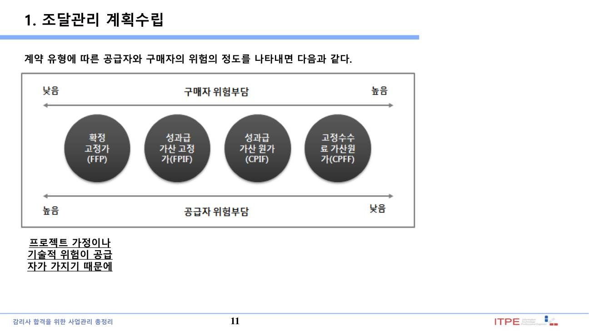
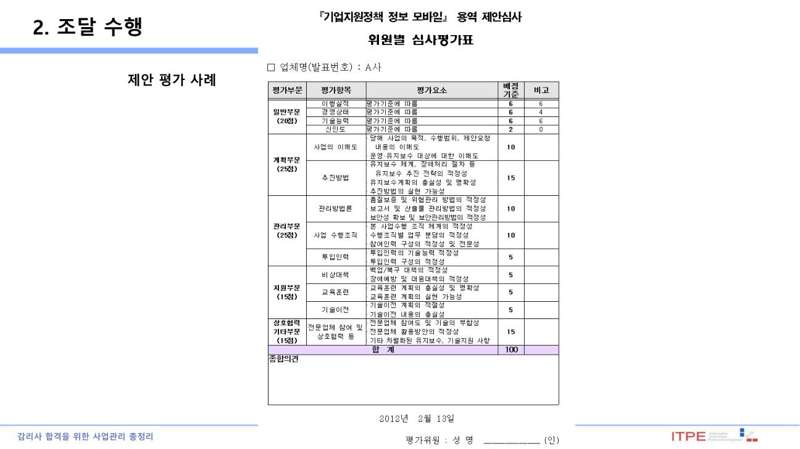
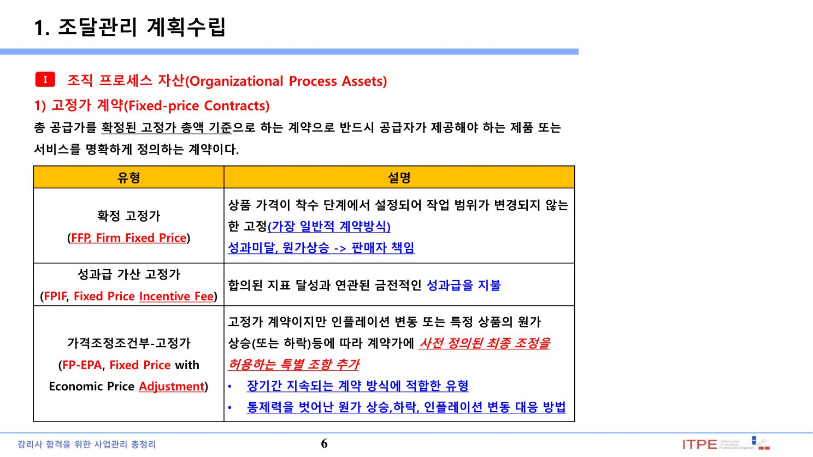
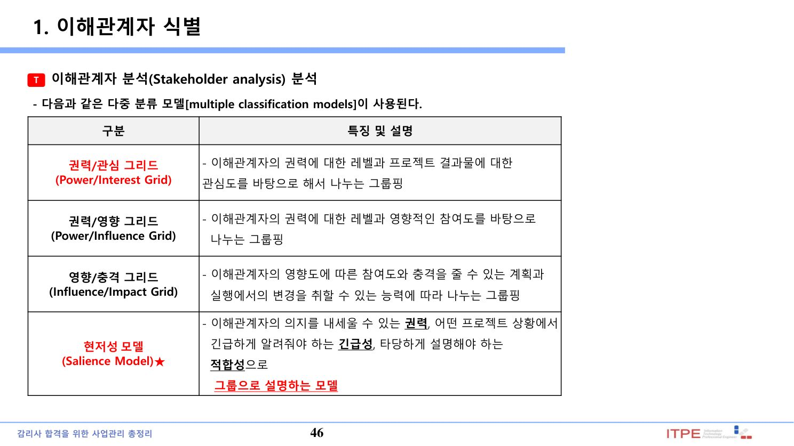
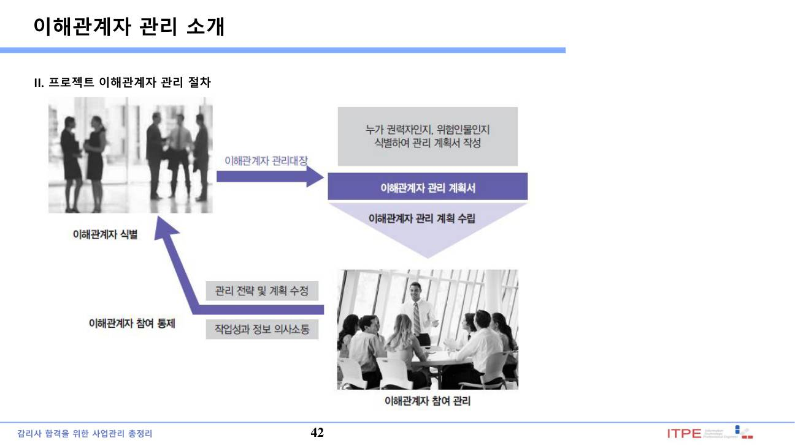
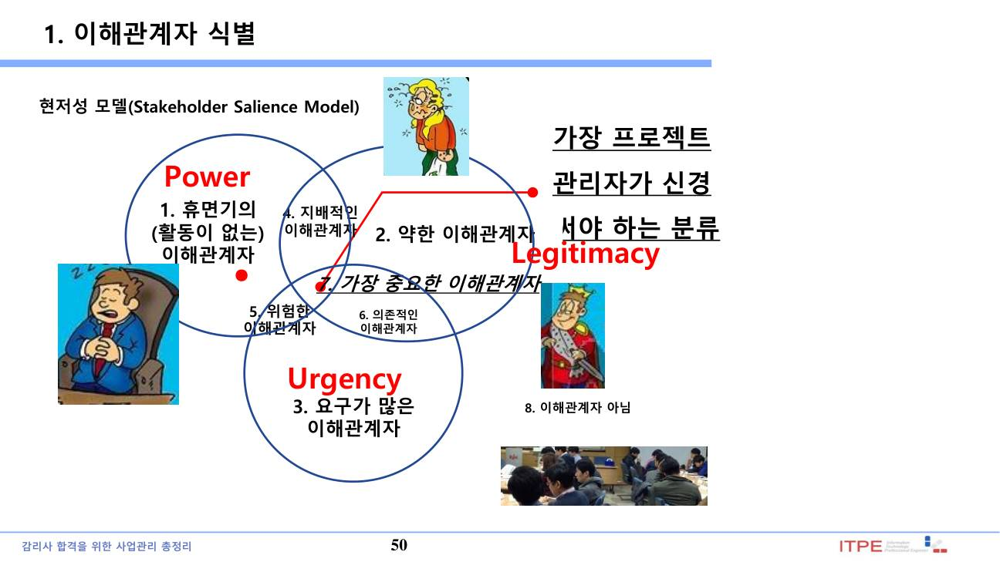

1. 조달관리 프로세스
| 프로세스 | 내용·산출물 |
|---|---|
| 조달관리 계획수립 | 구매 여부·방법·계약유형 결정 → 조달관리 계획서, 조달 SOW, 입찰문서, 공급자선정 기준 |
| 조달 수행 | 공급자 응답 수집·선정·계약 체결 → 선정된 공급자, 협약(계약) |
| 조달 통제 | 계약 이행 관리·성과 감시·변경·클레임 |
| 조달 종료 (PMBOK 5) | 인도물 인수·미결 정리·기록 보관·계약 종료. (PMBOK 6은 조달통제에 통합) |
프로세스별 상세 설명
① 조달관리 계획수립: 구매 여부(Make-or-Buy)·조달 방법·계약 유형을 결정하고 조달 SOW·입찰문서·공급자 선정기준을 작성.
② 조달 수행: 공급자 응답(제안서)을 수집하고 공급자를 선정하여 계약을 체결(협약).
③ 조달 통제: 조달 관계를 관리하고 계약 성과를 감시하며 필요 시 계약을 수정·변경(클레임 관리).
④ 조달 종료: 각 조달을 완료하고 인도물을 인수하며 기록을 보관·계약을 종료. (PMBOK 6은 조달통제에 통합)
② 조달 수행: 공급자 응답(제안서)을 수집하고 공급자를 선정하여 계약을 체결(협약).
③ 조달 통제: 조달 관계를 관리하고 계약 성과를 감시하며 필요 시 계약을 수정·변경(클레임 관리).
④ 조달 종료: 각 조달을 완료하고 인도물을 인수하며 기록을 보관·계약을 종료. (PMBOK 6은 조달통제에 통합)
💡 Tip · 결정 기준·종료
타당성 검토(Make-or-Buy)로 자체 개발(Make)과 외부 구매(Buy)를 결정한다. 조달 SOW(작업기술서)는 공급자가 수행할 구체적 작업 범위를 정의한다. 계약 종료 전에도 변경통제 조항에 따라 상호합의로 언제든 협약을 변경할 수 있다. (용어: 발주자=고객=구매자, 공급자=판매자=외주업체)
▸ 원본 p.4 표 복원: 조달관리 계획수립
| 입력물(Input) | 도구 및 기법(Tool & Technique) | 산출물(Output) |
|---|---|---|
| 프로젝트 관리 계획서 (Project Management Plan) 요구사항 문서(Requirements Documentation) 위험 관리대장(Risk Register) 활동 자원 요구사항 (Activity Resource Requirements) 프로젝트 일정(Project Schedule) 활동원가 산정치 (Activity Cost Estimates) 이해관계자 관리대장 (Stakeholder Register) 기업환경요인(EEF) 조직 프로세스 자산(OPA) | Make-or-Buy 분석★ (Make-or-Buy Analysis) 전문가 판단(Expert judgment) 시장조사(Market Research) 회의(Meeting) | 조달 관리 계획서★ (Procurement Management Plan) 조달 작업기술서★ (Procurement Statement of Work) 조달문서 (Procurement Documents) 공급자 선정 기준 (Source Selection Criteria) 제작-구매 결정 (Make-or-Buy Decisions) 변경요청(Change Requests) 프로젝트 문서 갱신(Project Documents Updates) |
▸ 원본 p.20 표 복원: 조달 수행
| 입력물(Input) | 도구 및 기법(Tool & Technique) | 산출물(Output) |
|---|---|---|
| 조달 관리 계획서(Procureme nt Management Plan) 조달문서 (Procurement Documents) 공급자 선정 기준 (Source Selection Criteria) 제안서(Seller Proposals) 프로젝트 문서 (Project Documents) 제작-구매 결정 (Make-or-Buy Decisions) 조달항목(Procurement Statement of Work) 조직 프로세스 자산(OPA) | 입찰설명회(Bidder Conferences) 제안평가기법 (Proposal Evaluation Techniques) 독립산정★ (Independent Estimates) 전문가 판단(Expert Judgment) 광고(Advertising) 분석기법(Analytical Techniques) 조달협상 (Procurement Negotiations) | 공급자 선정(Selected Sellers) 협약서(Agreements) 자원 달력(Resource Calendars) 변경요청(Change Requests) 프로젝트 관리계획서 갱신 (Project Management Plan Updates) 프로젝트 문서 갱신 (Project Documents Updates) |


2. 계약 유형 · 위험 부담 ★★★

| 유형 | 세부 | 특징 · 위험 |
|---|---|---|
| 고정가(FP) | FFP(확정고정가), FPIF(가격인센티브), FP-EPA(가격조정) | 가격 확정. 매도자(공급자) 위험 최대, 매수자 위험 최소. 범위 명확할 때 |
| 원가정산(CR) | CPFF(고정수수료), CPIF(인센티브), CPAF(가산금) | 실비 + 수수료. 매수자(발주자) 위험 최대. 범위 불명확할 때 |
| 시간자재(T&M) | - | 고정가·원가정산의 혼합. 소규모·긴급·범위 유동적일 때 |
💡 Tip · 위험 부담 방향
고정가 → 매도자(공급자) 위험 큼(초과비용을 공급자가 부담), 원가정산 → 매수자(발주자) 위험 큼(실비를 발주자가 부담). 범위가 명확하면 고정가, 불명확하면 원가정산이 유리.
Q. 계약 유형과 위험 부담에 대한 설명으로 옳은 것은?
정답 ③ — 고정가는 매도자(공급자) 위험이 크고 범위가 명확할 때 유리. 원가정산은 매수자 위험이 크다.
3. 입찰문서(RFI · RFP · RFQ)
| 문서 | 용도 |
|---|---|
| RFI(정보요청) | 시장·공급자 정보 수집(사전 조사) |
| RFP(제안요청) | 복잡한 사업의 기술 제안 요청(협상에 의한 계약) |
| RFQ(견적요청) | 표준 품목의 가격(견적) 요청 |
💡 Tip · 구분
RFI=정보(사전), RFP=제안(기술·복잡), RFQ=견적(가격·단순). 감리·SW개발 같은 복잡 사업은 RFP 기반 협상에 의한 계약이 일반적.
4. 공급자 선정 · 조달 통제
| 구분 | 내용 |
|---|---|
| 공급자 선정 기법 | 가중치 평가, 선별기준(Screening), 독립 산정치, 제안서 평가, 협상 |
| 조달 통제 | 계약 성과 검토, 클레임 관리, 변경(계약 변경통제), 검사·감사 |
| 계약 종료 | 인도물 인수·미결 사항 정리·기록 보관(행정·계약 종료) |
💡 Tip
조달 통제에서 발생하는 클레임(Claim)은 협상으로 해결하되, 불가 시 대체적 분쟁해결(ADR)·중재를 활용. 계약 종료는 프로젝트 종료(4.7)의 일부로 수행된다.
▸ 원본 p.30 표 복원: 조달 통제
| 입력물(Input) | 도구 및 기법(Tool & Technique) | 산출물(Output) |
|---|---|---|
| 프로젝트 관리 계획서 (Project Management Plan) 조달문서 (Procurement Documents) 협약서(Agreements) 승인된 변경요청 (Approved Change Requests) 작업성과보고서 (Work Performance Reports) 작업성과데이터 (Work Performance Data) | 계약 변경 통제 시스템 (Contract Change Control System) 조달 실적 평가 (Procurement Performance Reviews) 검사 및 감사 (Inspections and Audits) 성과보고(Performance Reporting) 대금 지급 시스템 (Payment Systems) 클레임 관리(Claims Administration) 기록관리 시스템 (Records Management System) | 작업성과정보 (Work Performance Information) 변경요청(Change Requests) 프로젝트 관리 계획서 갱신 (Project Management Plan Updates) 프로젝트 문서 갱신 (Project Documents Updates) 조직 프로세스 자산갱신 (Organizational Process Assets Updates) |
▸ 원본 p.35 표 복원: 조달 종료
| 입력물(Input) | 도구 및 기법(Tool & Technique) | 산출물(Output) |
|---|---|---|
| 프로젝트 관리 계획서 (Project Management Plan) 조달문서 (Procurement Documents) | 조달감사(Procurement Audits)★ 조달협상 (Procurement Negotiations) 기록관리시스템 (Records Management System) | 종료된 조달 (Closed Procurements) 조직 프로세스 자산 갱신 (Organizational Process Assets Updates) |
5. 이해관계자 식별 · 분석 ★★★
이해관계자 관리 4프로세스
① 이해관계자 식별: 프로젝트에 영향을 주거나 받는 사람·조직을 파악하고 이해관계·영향력·참여도를 문서화 → 이해관계자 관리대장.
② 이해관계자 참여 계획수립: 이해관계자의 요구·기대·영향에 근거해 참여 전략을 수립.
③ 이해관계자 참여 관리: 이해관계자와 소통·협력하여 요구를 충족하고 참여를 유도하며 이슈를 해결.
④ 이해관계자 참여 감시: 관계를 감시하고 참여 전략·계획을 조정.
② 이해관계자 참여 계획수립: 이해관계자의 요구·기대·영향에 근거해 참여 전략을 수립.
③ 이해관계자 참여 관리: 이해관계자와 소통·협력하여 요구를 충족하고 참여를 유도하며 이슈를 해결.
④ 이해관계자 참여 감시: 관계를 감시하고 참여 전략·계획을 조정.

권력/관심 격자(Power/Interest Grid)
| 관심 낮음 | 관심 높음 | |
|---|---|---|
| 권력 높음 | 만족 유지(Keep Satisfied) | 밀착 관리(Manage Closely) |
| 권력 낮음 | 감시(Monitor, 최소 노력) | 정보 제공(Keep Informed) |
현저성(Salience) 모델 – 미첼·에이글·우드 ★★
Mitchell, Agle & Wood(1997)가 프로젝트 초기에 이해관계자를 3가지 속성으로 분석·분류한 모델이다.
| 속성 | 의미 |
|---|---|
| 권력(Power) | 이해관계자가 의지를 관철할 수 있는 힘 |
| 정당성/적합성(Legitimacy) | 관여가 타당·적절한지 |
| 긴급성(Urgency) | 즉시 대응·통보가 필요한 정도 |
💡 Tip · 분석 모델 구분
이해관계자 분석 격자: 권력/관심(Power/Interest), 권력/영향(Power/Influence), 영향/작용(Influence/Impact) 그리드 등. 현저성 모델은 3속성(권력·정당성·긴급성)으로, 격자형(2축)과 구분된다. 3속성을 모두 가진 이해관계자가 가장 핵심(Definitive).
▸ 원본 p.45 표 복원: 이해관계자 식별
| 입력물(Input) | 도구 및 기법(Tool & Techniq ue) | 산출물(Output) |
|---|---|---|
| Project charter (프로젝트 헌장) 조달 문서 (Procurement documents) 기업 환경 요인(EEF) 조직 프로세스 자산(OPA) | 이해관계자 분석 (Stakeholder analysis) 전문가 판단 (Expert judgment) 회의(Meetings) | 이해관계자 관리대장 (Stakeholder register) |
▸ 원본 p.53 표 복원: 이해관계자 관리 계획 수립
| 입력물(Input) | 도구 및 기법(Tool & Technique) | 산출물(Output) |
|---|---|---|
| 프로젝트 관리 계획서 (Project management plan) 이해관계자 관리대장 (Stakeholder register) 기업 환경 요인(EEF) 조직 프로세스 자산(OPA) | 전문가 판단 (Expert judgment) 회의(Meetings) 분석 기법 (Analytical techniques) | 이해관계자 관리 계획서 (Stakeholder management Plan) 프로젝트 문서 갱신 (Project documents updates) |
Q. 현저성(Salience) 모델의 3가지 속성을 모두 모은 것은?
정답 ② — 현저성 모델은 권력·정당성(적합성)·긴급성 3속성이다. '관심도·영향력'은 격자형(Grid) 분석의 축.
Q. 권력이 높고 관심도 높은 이해관계자에 대한 전략은?
정답 ② — 권력·관심이 모두 높으면 밀착 관리한다. 권력 높음·관심 낮음은 '만족 유지'.


6. 이해관계자 참여관리
이해관계자의 현재/목표 참여 수준을 참여도 평가 매트릭스로 관리한다.
| 참여 수준 | 의미 |
|---|---|
| 인지 못함(Unaware) | 프로젝트·영향을 모름 |
| 저항(Resistant) | 변화에 저항 |
| 중립(Neutral) | 지지도 반대도 아님 |
| 지지(Supportive) | 프로젝트를 지지 |
| 주도(Leading) | 성공에 적극 관여·주도 |
💡 Tip · C(현재) vs D(목표)
참여도 매트릭스에서 C(Current, 현재)와 D(Desired, 목표)를 표시해 격차를 줄이는 참여 전략을 수립한다. 이해관계자 관리는 식별 → 참여계획 → 참여관리 → 참여감시 순.
▸ 원본 p.57 표 복원: 이해관계자 참여 관리
| 입력물(Input) | 도구 및 기법(Tool & Technique) | 산출물(Output) |
|---|---|---|
| 이해관계자 관리 계획서 (Stakeholder management Plan) 의사소통 관리 계획서 (Communications management plan) 변경 관리대장(Change log) 조직 프로세스 자산(OPA) | 의사소통 방법 (Communication methods) 상호개인 기술 (Interpersonal skills) 관리 기술 (Management skills) | 이슈 관리대장(Issue log) 변경요청(Change requests) 프로젝트 계획서 갱신 (Project management plan updates) 프로젝트 문서 갱신 (Project documents updates) 조직 프로세스 자산 갱신 (OPA updates) |
📚 전체 기출·예상문제 (5문항) — 원문 수록
본 강좌 원본 PDF에 수록된 기출·예상문제를 빠짐없이 원문 그대로 정리했습니다. 정답·해설은 강의 원문 기준입니다.
Q1. 1. 제품 및 서비스를 제공하는 판매자인 “을” 계약자에게 원가와 이익 및 손실에 대한 모든 책임과 위험을 전가하는 계약 방식은? (원본 p.12)
정답 ② 고정가격 계약
Q2. 1. 조달관리의 계약유형에 관한 설명으로 가장 거리가 먼 것은? (원본 p.13)
정답 ④
Q3. 당신은 공급업체로부터 제안서를 받아 보았는데 공급 업체 중 하나가 1억 5천만 원 규모에 대한 프로젝트를 진행할 수 있음을 제안 하였다. 제안 내용에 따르면 프로젝트 원가는 1억 2천이고 공급사의 이익은 3천만 원이 될 것이다. 이러한 계약 유형은 어느 것인가? (원본 p.39)
정답 ③ 끝
Q4. 이해관계자 권력과 관심도(Power/Interest) 그리드에서 없는 분류 모델은? (원본 p.60)
정답 ④
Q5. 현저성 모델은 미첼, 에이글, 우드(Mitchell, Agle and Wood)가 프로젝트 관리자에게 프로젝트 초기에 3개의 속성으로 이해관계자들을 분석하여 분류한 모델이다. 3가지 속성을 모두 모은 것은 무엇인가? (원본 p.61)
정답 ③ 끝